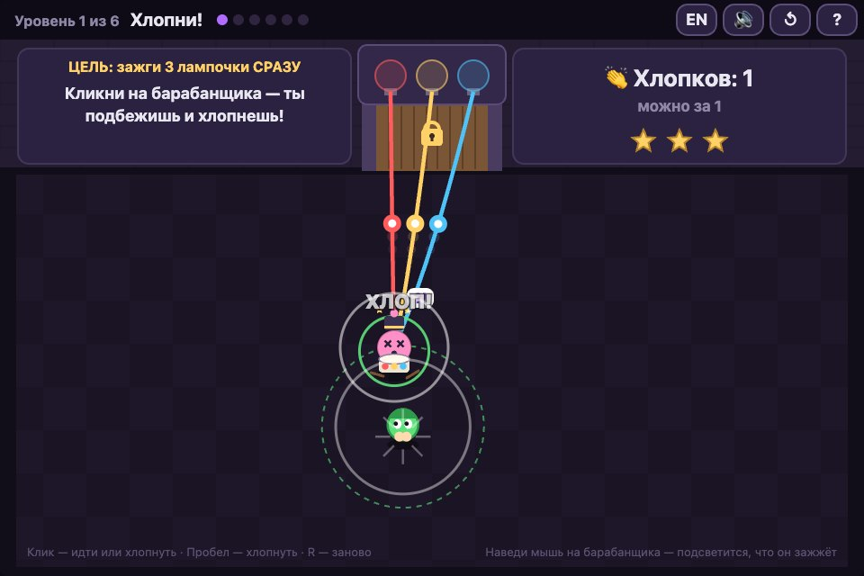
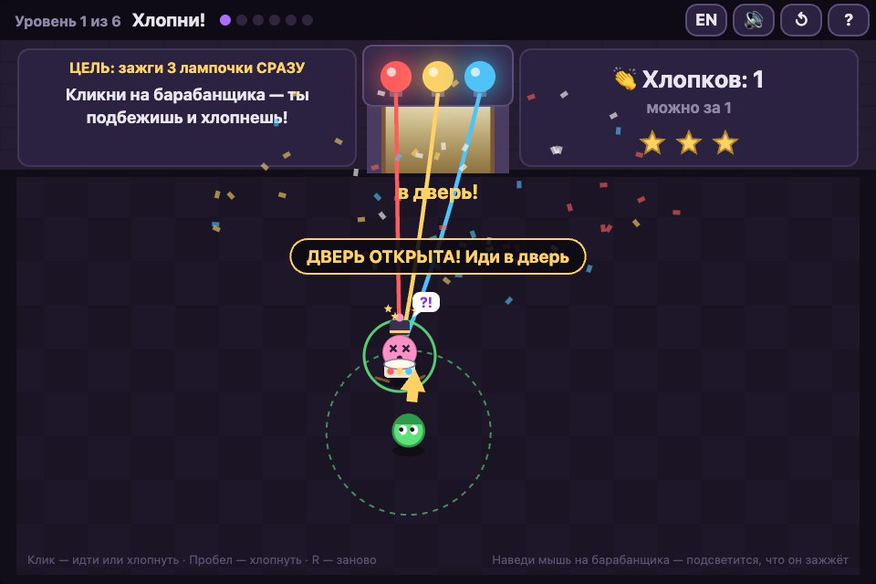
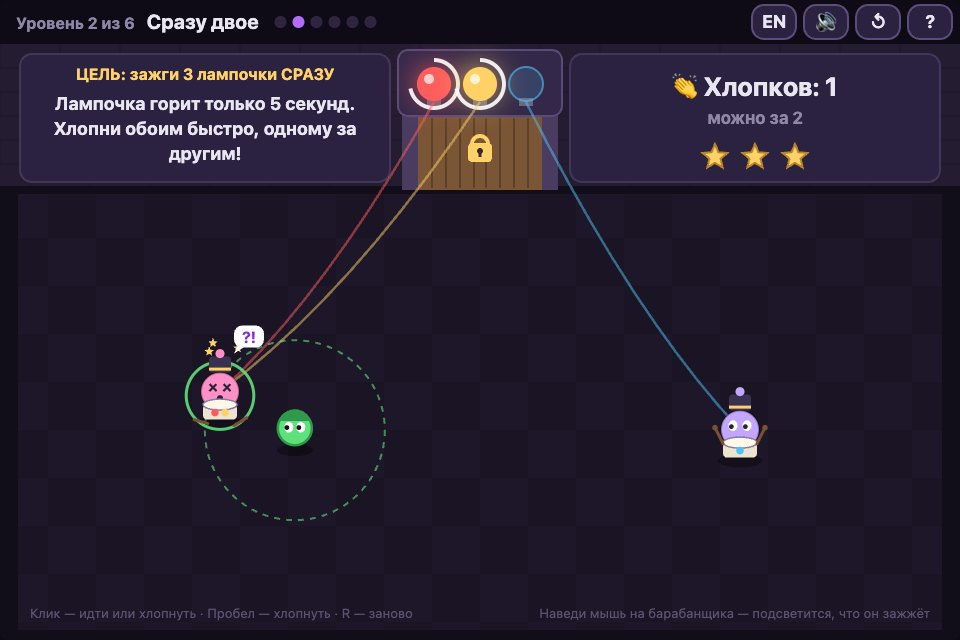
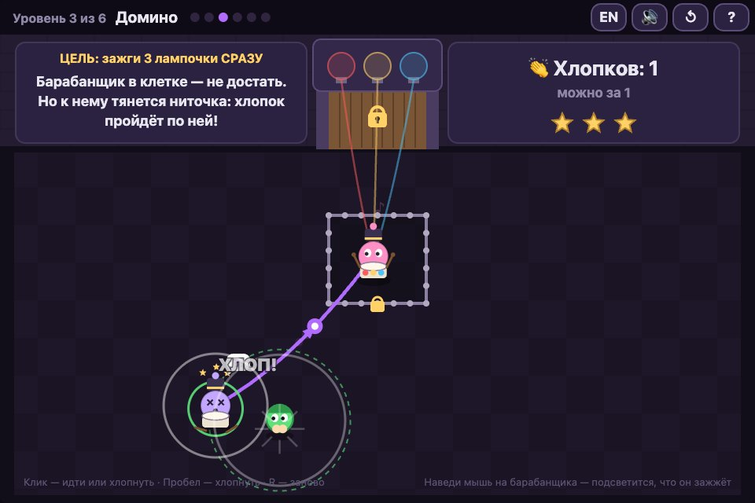
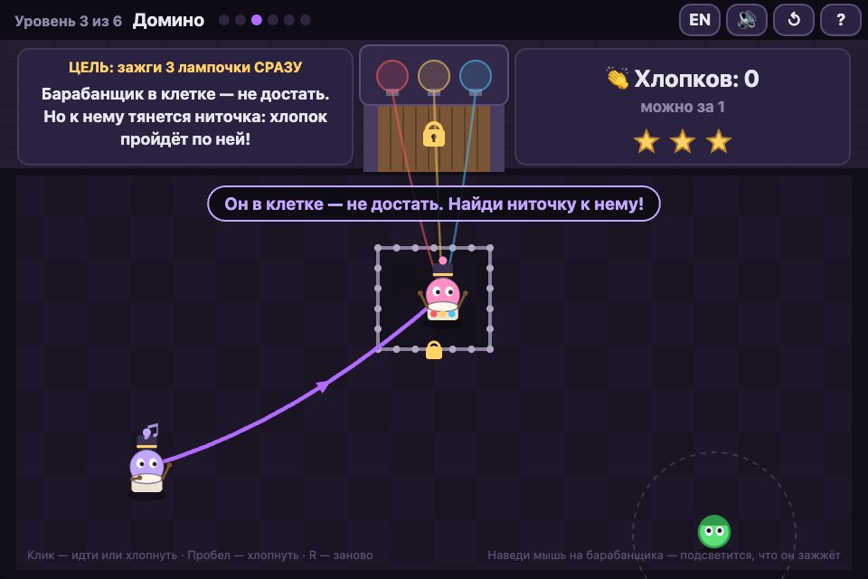
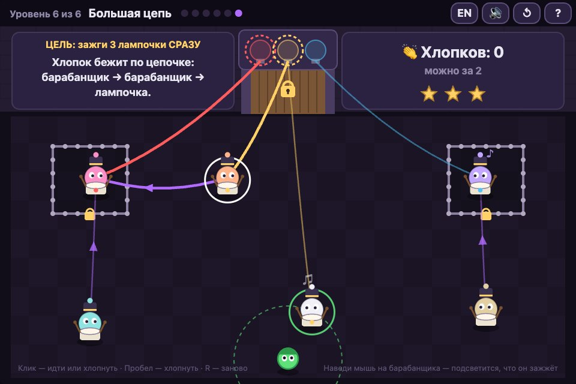
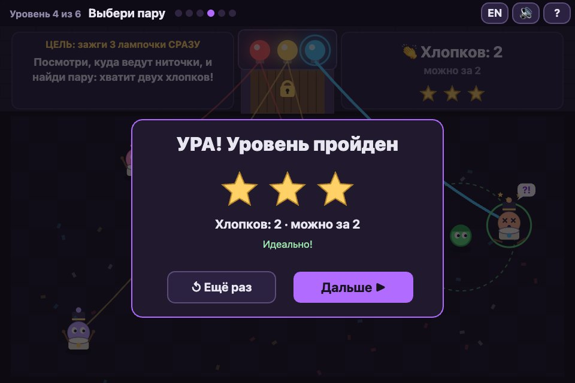

idea_generator · перебить × лейтмотив · визреференс v2
Лейтмотив
У каждого барабанщика своя песенка. Хлопни рядом с ним — он собьётся, и сбой побежит по его ниточкам к лампочкам и к другим барабанщикам. Зажги все три лампочки одновременно — дверь откроется.
Вопрос прототипа: читают ли игроки ниточки и выбирают нужную пару хлопков — или хлопают по всем подряд? Ответ видно по звёздам: решил минимумом хлопков — три звезды.
1Кликни на барабанщика — подбежишь и хлопнешь
2Он собьётся, искра побежит по ниточкам
3Три лампочки горят сразу — дверь открыта








Что есть что
Барабанщик. Ходит туда-сюда под свою песенку. Цветные точки на барабане — какие лампочки он зажигает сам.
Ты. Пунктир — докуда достаёшь хлопком.
Цветная ниточка — к лампочке того же цвета.
Фиолетовая ниточка со стрелкой — к другому барабанщику (домино).
Лампочка горит 5 секунд, кольцо — таймер. Перед тем как погаснуть, мигает.
Клетка: подойти нельзя, достать только искрой по ниточке.
Шесть уровней — по одной новой штуке
- Хлопни! — один барабанщик, три ниточки. Учит: клик → хлопок → лампочки → дверь.
- Сразу двое — лампочки у двух барабанщиков в разных концах. Учит «одновременно».
- Домино — главный в клетке, снаружи тот, кто к нему привязан. Учит каскад.
- Выбери пару — четыре барабанщика, нужна пара на два хлопка. Учит читать ниточки.
- Лови ритм — двое ходят навстречу; проще хлопнуть, когда они рядом.
- Большая цепь — две клетки, ходячий барабанщик-развилка, ложные пути.
Кадры сняты из самого прототипа (играть), спека — spec.md. v2 заменила v1 (циферблаты фаз, удар «не в такт», тревога, подпевание), которую было трудно понять.